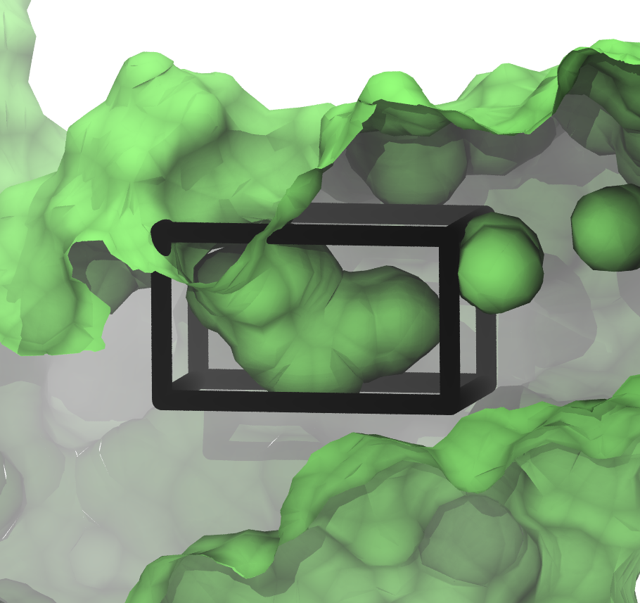
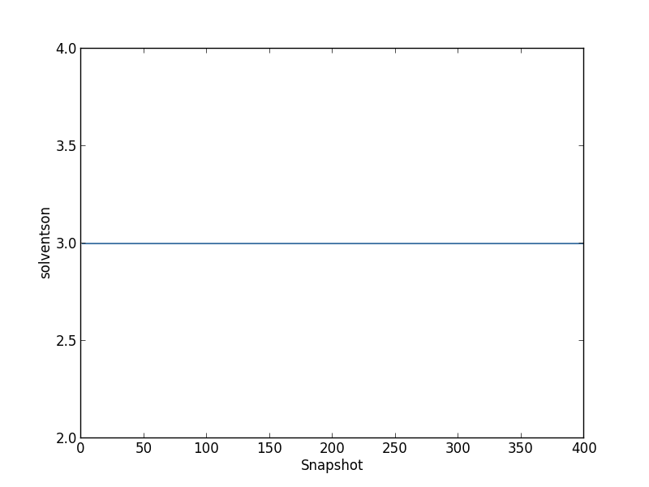
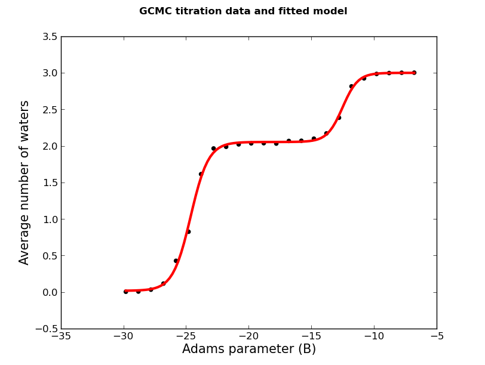

To come back to the tutorial index, click here.
protein_pms.pdb - the structure of the BPTI in PDB formatThe protein has already been protonated and the atoms names have translated to the ProtoMS naming scheme. You can read more about setting up structures here.
In protein_pms.pdb, a box centred at (32.0, 7.0, 2.0) whose sides have lengths (3.5, 4.0, 8.0) encompasses a small cavity. The aim is to use GCMC to calculate the total affinity of water for that site. We can create a box to these specifications by typing
python2.7 $PROTOMSHOME/tools/make_gcmcbox.py -b 32.0 7.0 2.0 3.5 4.0 8.0 -o gcmc_box.pdb
This creates a file called gcmc_box.pdb while outputting:
Volume of GCMC box: 112.0 Bequil: -9.15
We need to know the volume of the GCMC box later for analysis, but will use Bequil to set up the simulation. Bequil is calculated using:
Bequil = βμ'hyd + ln(V/Vo),
where Bequil is the Adams value that produces the equilibrium number of waters for the system. μ'hyd is the excess chemical potential of bulk water, which is the hydration free energy of a single water molecule. In ProtoMS, previous analysis has found that μ'hyd equals -6.2 kcal/mol. V here is the volume of the gcmc region and Vo is the volume occupied by a single water molecule at bulk density and has a value of 30 Å3. As the region specified by gcmc_box.pdb has a volume of 112 Å3, the above equation gives Bequil to be -9.15.
The box we've just created and the small cavity in the protein look like: XXX replace

The figure shows a slice through the surface of the protein, and gcmc_box.pdb encompassing the small, sock-like cavity we're interested in.
As we wish to completely bind water to the volume specified by gcmc_box.pdb, we must run a series of GCMC simulations at different chemical potentials (Adams value in ProtoMS), within which the average number of inserted waters ranges from 0 to the equilibrium number of waters for the system. As we know Bequil is -9.15, we want to chose a range of waters which encompasses this value towards its higher end. We will chose a range of -6.8 to -29.8. As we would like this to run on a single, 16 processor node, we will run 16 B values between these two points. If you would like to set this simulation up for a different machine, change the value to 12 or 24, or any appropriate value.
python2.7 $PROTOMSHOME/protoms.py -s gcmc -sc protein_pms.pdb --gcmcbox gcmc_box.pdb --adamsrange -29.8 -6.8 16This has automatically solvated our protein in a droplet of water (
water.pdb) by randomly placing waters up to bulk density. Any solvent water that was placed inside gcmc_box.pdb has been removed to create water_clr.pdb.
For this system, convergence can sometimes be difficult. For this reason, open the run_gcmc. cmd file in a text editor. The last line should start with "chunk simulate 40000000". Change this to say "chunk simulate 80000000", which will double the number of production steps. Sa ve the changes before starting the simulation.
mpirun -np 16 $PROTOMSHOME/protoms3 run_gcmc.cmd
pymol out_gcmc/b_-8.333/all.pdbCheck your
warning files as well to make sure nothing untoward has happened.
Before calculating occupancies and free energies with grand canonical integration, we should check to see if the simulations are approximately equilibrated. For one simulation, we can see the average number of inserted GCMC waters for each snapshot by typing
python2.7 $PROTOMSHOME/tools/calc_series.py -f out_gcmc/b_-8.333/results -s solventson
For the rest of this analysis, we'll focus on the script calc_gci.py which contains a lot of functionality. To see how the average number of waters varies with the applied chemical potential - in other words, a titration - type
python2.7 $PROTOMSHOME/tools/calc_gci.py -d out_gcmc/b_-* -p titrationDepending on what you found with
calc_series.py, you can discard the first X snapshots of each simulation by additing the flag --skip X. The titration plot should look something likeThe plot shows that the average number of waters at each Adams value occurs in 'steps', which is characteristic of all GCMC titration plots. Unlike the case when GCMC is performed on a cavity that can only bind a single water molecule (like here), the points of inflection of these steps do no necessarily correspond to free energies. As demonstrated in G. A. Ross et. al, Journal of the American Chemical Society, 2015, it's actually the area under the titration curve that is related to the free energy to transfer water from ideal gas to the simulated system.
To calculate the area under the titration curve, it is prudent to smooth over the data. The script calc_gci.py can fit a curve by modelling the titration data as a sum of logistic functions, which is equivalent to a very simple type of artificial neural network (ANN). As the titration data shows what looks like 2 steps, we can input that into the model. To calculate the fit with 3 steps and plot it, type
python2.7 $PROTOMSHOME/tools/calc_gci.py -d out_gcmc/b_-* -p fit -c fit --steps 3 -v 112Where
-v is the volume of the GCMC region given by the make_gcmcbox.py script. This can also be calculated by looking at the gcmc_box.pdb file and determining the volume from the length of the x, y and z dimension.
The result looks like

The line of best fit is shown in red. The fit correctly captures the shape of the titration data, and looks to be a good fit to all the data points. To calculate the binding free energies of adding water to the cavity, type
python2.7 $PROTOMSHOME/tools/calc_gci.py -d out_gcmc/b_-* -c pmf --steps 3 -v 112where
-c pmf indicates that the 'potential of mean force', i.e. the free energy, will be calculated. This will bring up a table like this one:
FREE ENERGIES:
Quoted errors are from multiple repeats of the fitting.
|----------------------IDEAL GAS TRANSFER FREE ENERGIES--------------------| |-BINDING FREE ENERGIES-|
'# Waters' 'Mean' 'Std. dev.' '25th Percentile' 'Median' '75th Percentile' 'Mean' 'Median'
0.00 0.00 0.00 0.00 0.00 0.00 0.00 0.00
1.00 -16.54 0.00 -16.54 -16.54 -16.54 -10.34 -10.34
2.00 -29.63 0.01 -29.63 -29.63 -29.62 -17.23 -17.23
3.00 -36.39 0.00 -36.39 -36.39 -36.39 -17.79 -17.79
The table shows the free energy (in kcal/mol) to transfer water from ideal gas (IDEAL GAS TRANSFER FREE ENERGIES) and from bulk water (BINDING FREE ENERGIES) to the GCMC box. The script calc_gci.py actually fits the ANN several times from different initial parameter values. The free energies are calculated for each fit, and from the ensemble of the calculated free energies the mean, standard deviation (Std. dev), and the 25th, 50th (Median), and 75th percentiles are calculated. When the titration data is particularly noisy, the median free energy is a more robust measure of the average free energy than the mean. The table indicates that the free energy to bind three waters from bulk water is -17.79 +/- 0.01 kcal/mol.
A way to estimate the sensitivity of the free energy on the titration is to use bootstrap sampling. In each bootstrap sample, the titration data is randomly sampled with replacement, the ANN re-fit, and the free energy calculated.
You should do as many bootstrap samples as possible, but this can take some time using the default fitting parameters. To speed up the bootstrapping, you can run just 1 random seed for each fit by typing fit_options 'repeats 1'. Also, you can save the ensemble of fitted ANNs using the -o flag. To do 1000 bootstrap samples, plot the fits with error bars, and save the ANNs, type
python2.7 $PROTOMSHOME/tools/calc_gci.py -d out_gcmc/b_-* -p percentiles pmf -c pmf --steps 3 -v 112 -b 1000 -o ANNs.pickleThe output,
ANNs.pickle, can be read in by calc_gci.py when you want to use the same fitted models again. The ensemble of titration fits looks like
FREE ENERGIES:
Quoted errors are from 1000 bootstrap samples.
|----------------------IDEAL GAS TRANSFER FREE ENERGIES--------------------| |-BINDING FREE ENERGIES-|
'# Waters' 'Mean' 'Std. dev.' '25th Percentile' 'Median' '75th Percentile' 'Mean' 'Median'
0.00 0.00 0.00 0.00 0.00 0.00 0.00 0.00
1.00 -16.63 1.28 -16.48 -16.36 -16.32 -10.43 -10.16
2.00 -29.69 1.34 -29.68 -29.43 -29.30 -17.29 -17.03
3.00 -36.41 1.42 -36.52 -36.20 -35.96 -17.81 -17.60
The error to transfer/bind 3 waters has now increased to about 1.5 kcal/mol. The binding free energy has been automatically plotted and looks likegcmc_box.pdb.
The optimal water occupancy can also be calculated by looking at Bequil. The Bequil value should correspond to the optimal occupancy, shown in the setup section. As calculated previously, the volume of 112 Å3 relates to a Bequil of -9.15. The water occupancy is calculated by determining the N value at the point where the fitted curve passes through Bequil. As this is dependent on the quality of the fit to the data, the average Nequil is also calculated as the average of simulated B values near to the Bequil value.
B EQUILIBRIUM CONDITION FROM FITTED MODELS:
Bequil: -9.2
Number of molecules: Mean Std. dev 25th Percentile 50th Percentile 75th Percentile
2.9 0.9 2.8 2.9 2.9
B EQUILIBRIUM CONDITION FROM SIMULATED B VALUE:
Bequil: -9.2
Similar simulated B values: [-9.867]
Average N* at simululated at B values: [-9.867] is 2.6
The fitted model estimation of the water occupancy is 2.9 waters, which is consistent with the minimum binding free energy network also being 3 waters. The estimation based on the nearest B value underestimates the number of waters at 2.6, but this difference is probably due to the B value simulated (-9.8) being sufficiently different to the equilibrium value (-9.2).
To calculate the free energy to add a specific number of waters, say the free energy to bind 1 water when 2 are already bound, use the --range flag. We'll input the 1000 boostrap fits with the -i flag. The binding free energy of the 3rd water can be calculated with
python2.7 $PROTOMSHOME/tools/calc_gci.py -d out_gcmc/b_-* -c pmf -v 112 -i ANNs.pickle --range 2 3with the result
FREE ENERGIES:
Quoted errors are from the input model(s).
|----------------------IDEAL GAS TRANSFER FREE ENERGIES--------------------| |-BINDING FREE ENERGIES-|
'# Waters' 'Mean' 'Std. dev.' '25th Percentile' 'Median' '75th Percentile' 'Mean' 'Median'
2.00 0.00 0.00 0.00 0.00 0.00 0.00 0.00
3.00 -6.71 0.48 -6.81 -6.76 -6.72 -0.51 -0.56
Note how the uncertainty has signicantly decreased. This is because we need only evaluate a smaller area for the relative calculation. The above tables shows that the free energy to bind the third and last water is -0.51 +/- 0.48 kcal/mol.